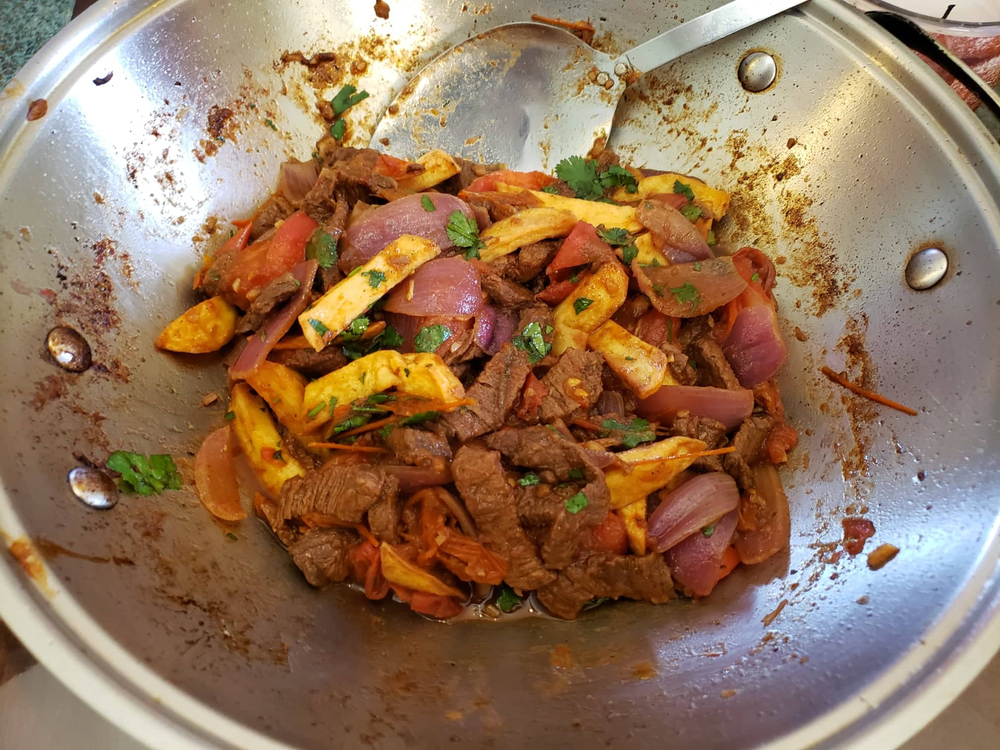

Lomo Saltado

Ingredients:
Marinade:
- 1 lb Sirloin steak, cut into strips
- 4 tbsp Soy sauce
- 4 tbsp White vinegar
- 1 tbsp Olive oil
- 1 tsp Cumin
- 1 tsp Black pepper
- 1 tsp Salt, or to taste
Other Ingeredients:
- 11 oz French fries, thick, unsalted
- 1 Red onion, cut into chunks
- 1 Ají amarillo chili pepper, juliened
- 2 cloves Garlic, minced
- 1/2 cup Beef stock
- 2 Tomatoes, each cut into 8 slices
- 1/4 tsp Ground dried oregano
- 1 tbsp Cilantro, diced
Instructions:
- Combine the marinade ingredients together with the steak cut into strips and let marinate overnight.
- When done marinating, strain the steak from the marinade. Heat the olive oil in a wok at very high heat. Add the steak to the wok and sear for 4-5 minutes.
- Add the onion, ají amarillo chili pepper and garlic to the wok. Fry for whilst continuously stirring until the onions start to become soft. Then add the beef stock.
- Add the tomato and fry the ingredients in the wok until the tomatoes are soft. Finally add the ground oregano and French fries, tossing everything together for another 30 seconds in order to integrate all the ingredients.
- Turn the heat off and mix in the cilantro. Serve with white rice.